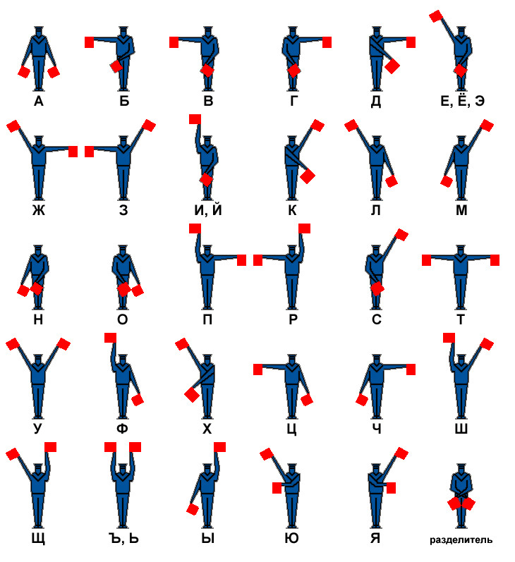

Семафорная азбука
Во второй половине ХIХ века на флоте была введена особая должность —
сигнальщик. А в 1895 году изобретена сигнальная
азбука вице-адмиралом С.О.Макаровым, которая нужна была для передачи сообщений на расстоянии
между проходящими мимо
кораблями, а также на сушу. Каждая буква семафорной азбуки, а также цифры и служебные знаки
закодированы особым положением рук с флажками. Размер
флажков составляет обычно 30×35 см. В светлое время суток используются флажки с тёмной
тканью (красной, чёрной), а в
тёмное — со светлой тканью (белой, жёлтой). Если флажки отсутствуют, то сообщение передается
бескозырками. Дальность
передачи такого сообщения около 3 км, а при использовании бинокля ещё больше. Хороший
специалист-сигнальщик за минуту
может передать от 60 до 80 знаков, но этот показатель в редких случаях может достигать до
110.
